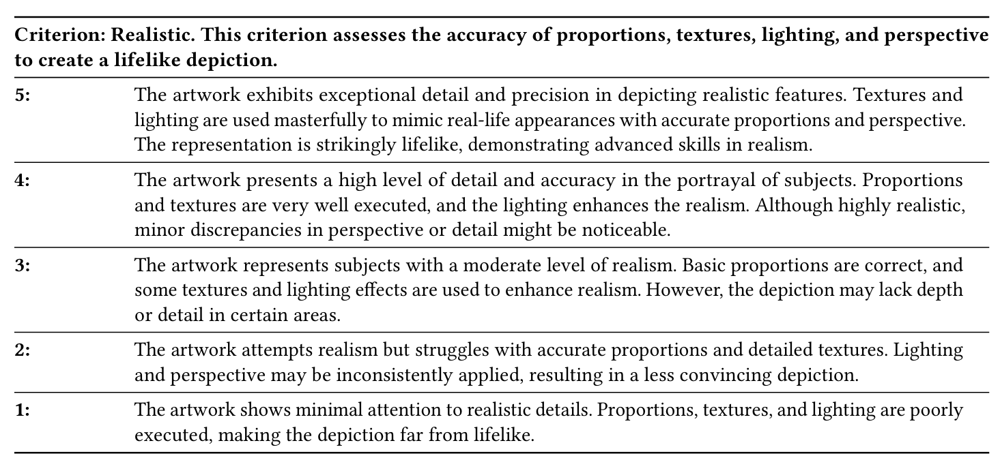
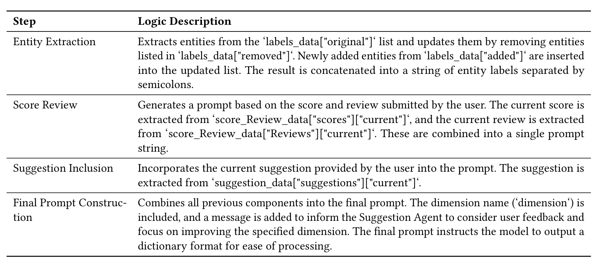

{
"original": ["Face", "Black hair", "Open mouth", "Green shirt", "Blue shorts", "Black shoes", "Monkey", "Cat", "Dog", "Bird", "Insect", "Exclamation mark", "Yellow platform", "Books"],
"added": ["Yellow balances", "schoolbag"],
"removed": ["Yellow platform"],
"style": {
"original": ["Style: Cartoon"],
"added": [],
"removed": []
}
}

A multi-agent data collection system from ArtMentor evaluates GPT-4o's art assessment capabilities across 380 sessions with five art teachers and three GPT-4o agents. Each session begins with artwork upload, followed by automatic entity recognition. Teachers refine these entities, select from nine evaluation dimensions, and revise the generated scores, reviews, and suggestions until accurate. The process ends with teachers submitting the finalized entities, scores, reviews, and suggestions.

ArtMentor Space consists of four key components: a. Multi-Agent Data Collection System, b. HCI Dataset, c. Data Analysis System, d. Iterative Upgrades System. The Multi-Agent System includes three agents: E-Agent for entity recognition, R-Agent for review generation, and S-Agent for suggestions. R-Agent and S-Agent perform nine roles, such as Realism and Deformation. Nine HCI processes (P1-P9) are marked by origin: green for computer, orange for human. After data collection, we generate an HCI dataset with five products, evaluated by four metrics. Iterative upgrades focus on improving underperforming roles.

This image displays an interface for analyzing artwork. It features a central panel showing an abstract painting of a horse with various tags. Icons of a robot (E-Agent) and a person in a safety helmet (Art Teacher) are visible. The interface includes buttons for uploading artworks and managing entities, alongside a JSON-style data display showing recognized elements in the artwork.

This image displays an interface for art evaluation and suggestion. The top of the interface shows action buttons for "Evaluate & Generate", "Modify", and "Submit". Below, there's a section labeled "Realism" with a score of 5 out of 10. The interface includes two main text areas: a "Review" section critiquing an artwork of a horse, and a "Suggestion" section offering improvements. Each text area has "Modify" and "Submit" buttons. On the right side, two robot icons are labeled "Review Agent" and "Suggestion Agent". The interface uses a light color scheme with rounded elements, suggesting a user-friendly design for collaborative art analysis and improvement.

This image displays GPT-4o's accuracy in recognizing art styles across 20 artworks. A 5x4 grid represents each artwork, with lighter circles indicating correct recognition and darker ones showing errors. Artworks 4-7, identified as ink wash paintings, are notably misrecognized, highlighting GPT-4o's specific weakness with this style. Despite this, the overall accuracy is 80%, as shown by the large circle below. This visualization effectively demonstrates GPT-4o's general competence in art style recognition while pinpointing its struggle with ink wash paintings.

This bar chart illustrates GPT-4o's entity recognition capabilities. Notably, the precision score stands out at 0.935, significantly higher than other metrics. Accuracy (0.833) and recall (0.836) are nearly equal, while the F1 score (0.881) falls between precision and the other two metrics. The high precision indicates GPT-4o's strong ability to avoid false positives in entity recognition, despite slightly lower overall accuracy and recall.

Entity classification metrics for GPT-4o across 20 artworks (Artwork Numbers 1-20).

Score Acceptance Metrics.

Text Acceptance Metrics for R-Agent.

Text Acceptance Metrics for S-Agent.

Assessment Criteria for Realistic Artwork
